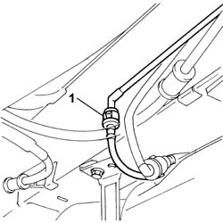
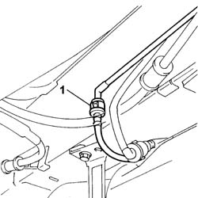
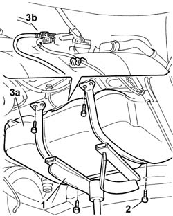
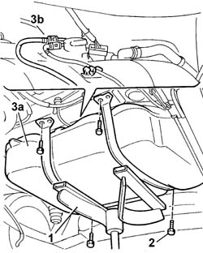

1040B56 fuel return line - r r
- Path
- Procedures > 10 ENGINE > 1040 FUEL TANK AND PIPES > 1040B FUEL SUPPLY/RETURN CIRCUIT PIPE > 1040B56 fuel return line - r r
- Kind
- repair procedure (removal / refitting; the operation number is the code)
- Applies to
- all engines; all production periods
- Interactive page
- https://sloeber94.github.io/elrnDB-fDbl/en/#/2584450
Applies to: all engines; all production periods
 Removing
Removing
 Refitting
RefittingPlace the car on a ramp.
Disconnect the battery negative terminal.
Raise the vehicle.
1. Disconnect the rear section of the fuel pipe from the middle section, acting on the rapid connector.

Applies to: all engines; all production periods
Removing
RefittingPosition the vehicle on the ramp.
1. Disconnect the rapid attachment on the rear fuel return pipe to the intermediate one.

Applies to: all engines; all production periods
1. Position an appropriate stand beneath the tank in order to support it.
2. Undo the tank bracket retaining bolts.
3. Lower the fuel tank (3a) and disconnect the rear pipe (3b) from the fuel pump, then remove it.

Applies to: all engines; all production periods
1. Place an appropriate stand under the fuel tank to support it during removal.
2. Undo the bolts securing the fuel tank mounting brackets.
3. Lower the fuel tank (3a) as much as necessary and disconnect the rear fuel return pipe (3b) from the pump, then remove it.

Applies to: all engines; all production periods
Refitting
RemovingPosition the rear section of the fuel pipe, connecting it to the fuel pump.
Raise the tank and tighten the bolts fixing the tank to the bodyshell to torque.
 | Fastening | Component | Ø | Value (daNm) |
|---|---|---|---|---|
- | Bolt | FUEL TANK | M8 | 2.4 |
Remove the tank stand.
Connect the rear section of the pipe to the middle section.
Lower the vehicle.
Connect the battery negative terminal.
Remove the car from the lift.
Applies to: all engines; all production periods
Refitting
RemovingRefit the rear fuel return pipe in its seating and connect it to the fuel pump.
Place the fuel tank back in its seating, then tighten the bolts securing the relevant support bracket to the specified torque.
| Fastening | Component | Ø | Value (daNm) |
|---|---|---|---|---|
- | Bolt | FUEL TANK | M8 | 2.4 |
Remove the fuel tank support stand.
Connect the rapid connector fo the rear fuel return pipe to the intermediate one.
Remove the car from the ramp.